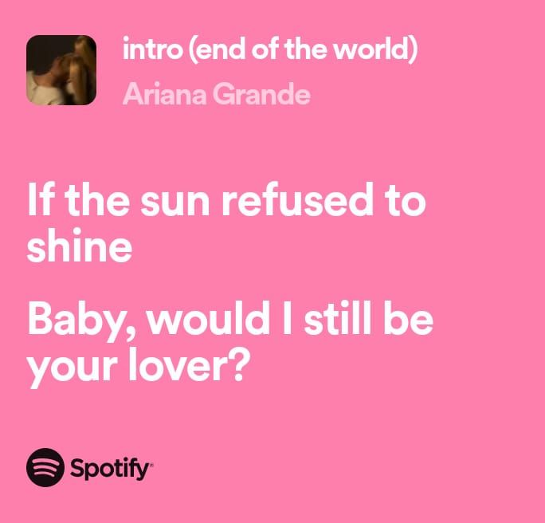
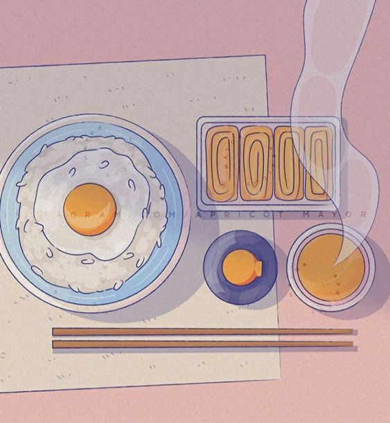
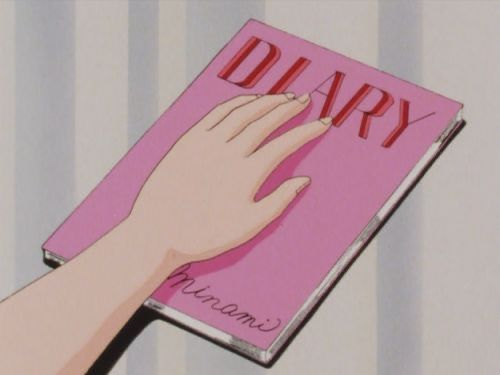

listening to music
There's something magical about hearing
Ariana Grande's ‘End of the World’.
Every melody in the intro is like a gentle melody.

watching mukbang
There is simple happiness,
that I always find when watching mukbang.

reading au
There is a certain magic when I drown
in an AU on Twitter.
Every story brings
me into an alternative world full of imagination